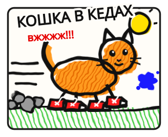
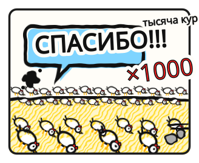
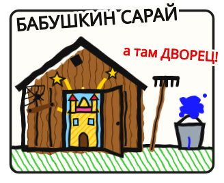

Русский Türkçe
Кошка в кедах
Турецкие слова через смешные картинки и русские созвучия — домашка между уроками, которую ученики открывают сами.
Rus öğrenciler için Türkçe kelimeler: komik resimler ve Rusça ses benzerlikleri. Dersler arasında öğrencilerin kendi isteğiyle açtığı bir ödev.
Как это работает Nasıl çalışıyor
Каждое турецкое слово цепляется за похожее русское — и смешную картинку, которая ведёт к смыслу. Ученик не зубрит: он смеётся, и слово остаётся.
Her Türkçe kelime, kulağa benzer gelen bir Rusça kelimeye ve anlama götüren komik bir resme bağlanır. Öğrenci ezberlemez: güler ve kelime aklında kalır.

kedi
кошка — кеды : кошка в кедах
kedi — Rusça «kedı» = spor ayakkabı: spor ayakkabılı kedi

teşekkür ederim
спасибо — тысяча кур кланяются и благодарят
teşekkür — Rusça «tısyaça kur» = bin tavuk: bin tavuk eğilip teşekkür ediyor

saray
дворец — открываешь бабушкин сарай , а там султан
saray — Rusçada «saray» = ahır, köhne depo: ahırın kapısını açıyorsun, içeride padişah
Что внутри İçinde neler var
300 слов на каждый день (уровень A1): приветствия, рынок и еда, дом и соседи, транспорт, врач, магазин, кафе, семья, погода, работа и деньги100 фраз цветными кусочками: видно, какое слово что значит, и турецкий порядок словОзвучка каждого слова и фразы — спокойно и не быстро«Вспомните?» — мягкое повторение: забытое слово возвращается через 1, 3, 7, 14, 30 днейБез регистрации, без рекламы, работает без интернета; телефон или компьютер
Günlük hayattan 300 kelime (A1): selamlaşma, pazar ve yemek, ev ve komşular, ulaşım, doktor, mağaza, kafe, aile, hava durumu, iş ve para100 cümle renkli parçalarla: hangi kelimenin ne anlama geldiği ve Türkçe kelime sırası görünüyorHer kelime ve cümle sesli — sakin ve yavaş
«Hatırlıyor musun?» — yumuşak tekrar: unutulan kelime 1, 3, 7, 14, 30 gün sonra geri gelirKayıt yok, reklam yok, internetsiz çalışır; telefonda ya da bilgisayarda
Как дать ученикам Öğrencilere nasıl verilir
Отправьте ученику ссылку на программу.
На телефоне: меню браузера → «Добавить на главный экран» (iPhone: «Поделиться» → «На экран „Домой“»). Откроется как обычная программа.
10 минут в день между уроками — просто листать картинки.
На уроке спросите пару слов из пройденного — сразу видно, работает ли. Время урока остаётся на разговор.
Öğrencinize programın bağlantısını gönderin.
Telefonda: tarayıcı menüsü → «Ana ekrana ekle» (iPhone: «Paylaş» → «Ana Ekrana Ekle»). Normal bir uygulama gibi açılır.
Dersler arasında günde 10 dakika — sadece resimlere bakmak yeterli.
Derste öğrendiklerinden birkaç kelime sorun — işe yarayıp yaramadığı hemen belli olur. Ders saati konuşmaya kalır.
Чем это полезно вам Size faydası
Слова держатся — на уроке меньше повторять, больше говорить
Ученикам весело — меньше бросают на первых месяцах
Не замена вам: программа учит слова, вы — говорить и понимать
Kelimeler akılda kalıyor — derste daha az tekrar, daha çok konuşma
Öğrenciler eğleniyor — ilk aylarda bırakan daha az oluyor
Sizin yerinizi tutmaz: program kelime öğretir, siz konuşmayı ve anlamayı
Сейчас — бесплатная обкатка Şimdi — ücretsiz deneme
Программу делаем в Мерсине для русских, которые учат турецкий. Сейчас она бесплатна. Взамен просим:
проверить турецкий — нашли ошибку или неестественную фразу, напишите;
рассказать, как зашло ученикам: что смешит, что непонятно, открывают ли сами;
подсказать, чего не хватает вам как репетитору. Programı Mersin'de, Türkçe öğrenen Ruslar için yapıyoruz. Şu an ücretsiz. Karşılığında rica ediyoruz:
Türkçeyi kontrol edin — bir hata ya da doğal olmayan bir cümle görürseniz yazın;
öğrencilerin nasıl karşıladığını anlatın: neye gülüyorlar, neyi anlamıyorlar, kendileri açıyorlar mı;
bir öğretmen olarak size neyin eksik olduğunu söyleyin.
Открыть программу ▸ Programı aç ▸
Вопросы и отзывы — тому, кто прислал вам эту ссылку. Совет: смотрите с телефона — так видят ученики.
Sorular ve yorumlar için bu bağlantıyı size gönderen kişiye yazın. İpucu: telefondan bakın — öğrenciler öyle görüyor.